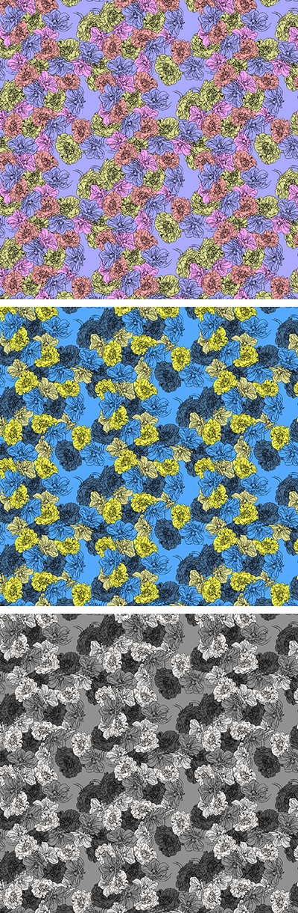
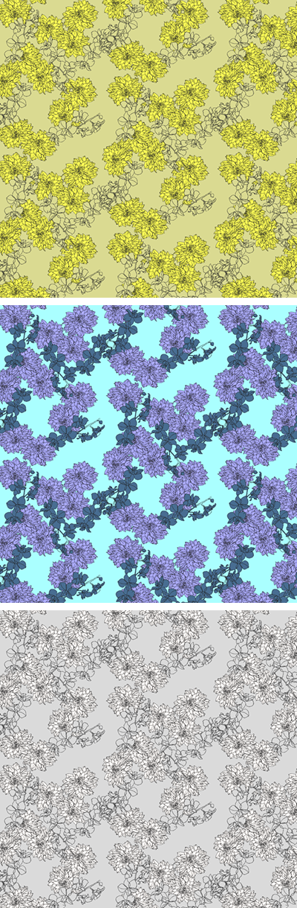

My name is Hyojin (he-o-jin, 2 syllables) Naomi Noh. I'm a textile/print designer based in NYC. Screen printing and drawing are my favorite techniques although I work with both traditional and digital media. I have a keen interest in digital printing, wovens and textile sustainability. I'm knowledgeable in properties and end-use applications of textiles and tech savvy. I have a BFA degree in Textile/Surface Design and an AAS degree in Fine Arts from Fashion Institute of Technology. You can reach me via email at info@hyojinnaomi.com or LinkedIn or Instagram.